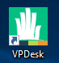
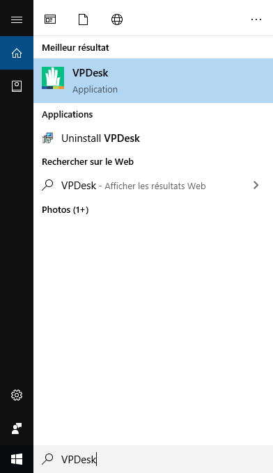
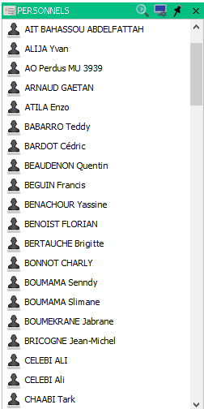
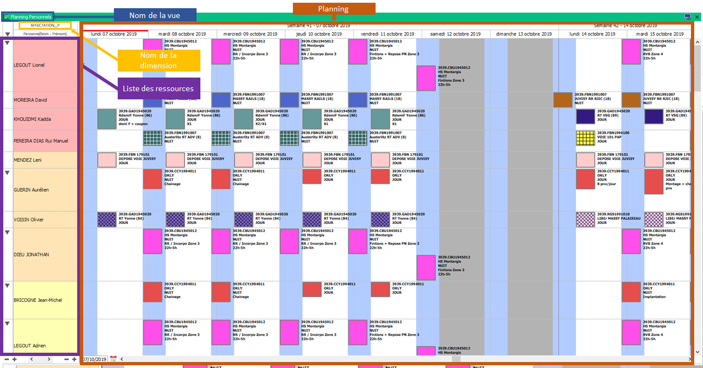

Comment se connecter ?¶
Installer VPDesk¶
VPDesk est le lanceur de l’application visual planning.
Pour le télécharger rendez vous ici : https://www.visual-planning.com/fr/accueil-espace-client/espace-clients-vpdesk
Téléchargez la version windows et exécutez le fichier.
Lorsque la fenêtre d’installation disparaît, vous devez lancer VPDesk avec l’icône sur votre bureau :
Si vous n’avez pas l’icône sur votre bureau recherchez VPDesk dans la barre de recherche en bas à droite :
Warning
Si VPDesk n’est ni sur votre bureau ni dans la barre de recherche celui-ci s’est peut-être mal installé. Vérifier les étapes précédentes
Compte¶
Votre identifiant est composé de la façon suivante :
Première lettre du prénom + Nom
Lors de votre première connexion laissez votre mot de passe vide, visual planning vous demandera d’en définir un pour votre compte.
Le mot de passe doit être composé de :
- Une lettre
- Un chiffre
- Au moins 4 caractères
Note
Ce mot de passe n’a pas besoin d’être modifié.
Warning
- Si vous n’avez pas encore de compte visual planning ou que vous ne vous souvenez plus de votre mot de passe contactez :
- Maxime CORDIER : maxime.cordier@etf.fr
- Julien GUY : julien.guy@etf.fr
Choisir son planning¶
Lors de votre première connexion visual planning vous demandera de sélectionner un planning. Sélectionnez le planning selon vos besoins :
- ETF_OFFICIEL_V3 :
- Planification de ressources (Personnel, Matériel)
- Gestion des habilitations
- Gestion des formations
- ETF_RAPPORT_V3 :
- Rapport soudure et meulage
- Plan de veille et gestion des KNs
Warning
Les autres planning visibles sont des plannings de test et de développement. Aucune données ne pourra être récupérée de ces plannings
Que faire une fois connecté ?¶
Une fois la barre de chargement disparu, vous devez demander à Visual Planning de vous afficher des données.
Cliquez sur l’onglet Affichage en haut puis selectionnez un affichage dans la liste des affichages :
Note
Lorsque vous femerez Visual Planning (avec la croix rouge en haut à droite), celui-ci se souviendra du dernier planning et affichage ouvert.
Warning
Si vous restez trop longtemps inactif sur Visual Planning (environt 30min d’inactivité) celui-ci vous deconnectera et ne se souviendra pas de votre dernier planning ou affichage.
Pour le reste des fonctionnalités, référez vous au différentes documentations disponibles.
Vocabulaire Visual Planning¶
Dimension¶
Une dimension est une table de données. Il existe une dimension pour chaque “type” de données :
Dimension "PERSONNELS" : Regroupe les collaborateurs
Dimension "ABSENCES" : Regroupe les absences
Dimension "CHANTIERS" : Regroupe les chantiers
On peut comparer la dimension a un tableau Excel.
Rubrique¶
Cette dimension est constituée de rubriques.
- Ces rubriques peuvent-être de différentes forment comme :
- Du texte à remplir
- Des fichiers à attacher
- Des cases à cocher
Exemple avec la dimension PERSONNEL :
Rubrique "Nom - Prénom" contient le nom et le prénom de la personne
Rubrique "Parti" permet de coché si la ressource est partie
Rubrique "Photo" contient une image
Une rubrique peut-être comparée à une colonne d’un tableau Excel
Ressource¶
Une ressource est un item de la dimension.
Maxime CORDIER est une ressource et ces informations sont :
"Nom - Prénom" : Maxime CORDIER
"Parti" : Non coché
"Photo" : Une photo de Maxime CORDIER
Une ressource peut être comparée à une ligne rempli d’un tableau Excel
Vue¶
Une vue est une façon d’afficher et de mettre en forme les données visuelement.
Il existe différents types de vues selon leurs utilités :
Vue ressource : C’est une liste de
ressourcede ladimensionchoisie.
- Vue planning : C’est le planning lié à la dimensions choisie.

- A gauche une liste de ressources
- A droite un planning
Note
Vous retrouvez le nom de la dimension à laquelle la vue est liée en regardant en haut à gauche de la vue.
Affichage¶
Un affichage est un ensemble de vue dont la mise en forme a été sauvegardée.
Elle peut-être public (Tous le monde peut y avoir accès) ou privée uniquement vous pouvez y avoir accès.
Note
Tous les affichages commençant par “_” (Exemple : _Planification) sont des affichages publics à tout ETF.
Tous les affichages commançant par un Code Secteur “MUXXXX” ou un Code Agence “ACXXXX” (Exemple : MU3939 - Planification) sont des affichages public uniquement de le secteur ou l’agence concerné.
Le nom d’un affichage correspond, dans la plupart des cas, aux actions qu’il est possible de réaliser dessus.
Evénement¶
Un événement est une liaison entre deux ressources de dimensions différentes à des dates.
Une absence est un événement contenant :
Une ressource "ABSENCE" : "Congé"
Une ressource "PERSONNEL" : "Maxime CORDIER"
"Date de début d'événement" : "01/01/2010"
"Date de fin d'événement" : "08/01/2010"
Un événement apparaît sur une vue planning comme une barre qui commence à la date de début et qui finit à la date de fin.
Filtre¶
La force de Visual Planning réside dans sa possibilité à filtrer toutes les vues.
Note
Par défaut la plupart des vues sont filtrée sur les ressources de vos droits secteurs.
- Sur des vue qui ne contiennent que des ressources, il y a deux niveaux de filtre :
- Niveau 1 (Libellé : nom de la dimension): Liste de filtres défini
- Niveau 2 (Filtre rapide): Filtre sur les différentes rubrique qui composent la dimension.
Pour changer les filtre, cliquez sur les listes déroulantes à côté.
Warning
Le filtre de niveau 1 est toujours plus restricif que les filtres rapide.
Si le filtre de niveau 1 est : _Personnel de mon secteur (qui n’affiche que le personnel selon mes droits secteurs) et que je cherche à aller voir un autre secteur,
il faut le définir en filtre rapide et changer le filtre de niveau 1 par un filtre mon restricitif.
- Sur des vues qui contiennent des événements, il y a deux niveaux de filtre pour les ressources et deux niveaux de filtre pour les événement :
- Filtre des ressources : (Comme sur une vue ressource)
- Niveau 1 : Liste de filtres défini
- Niveau 2 : Filtre sur les différentes rubrique qui composent la dimension.
- Filtre d’événemement :
- Niveau 1 (Libellé : événement): Liste de filtre défini
- Niveau 2 (Filtre rapide): Filtre sur les différentes dimensions
Note
Le filtre de moin restrictif de Visual Planning est le filtre (Tous)
Raccourcies clavier¶
| Touche | Action |
|---|---|
| CTRL + C | Copier |
| CTRL + V | Coller |
| CTRL + X | Couper |
| CTRL + Z | Retour arrière |
| CTRL + Y | Retour avant |
| CTRL + A | Selectionner tout |
| CTRL + CLIQUE GAUCHE | Sélection multiple individuel |
| MAJUSCULE + CLIQUE GAUCHE | Sélection multiple du premier élément selectionné au dernier |
| GLISSER/DEPOSER | Créer un événement avec la ressource tenue en souris |
| GLISSER/DEPOSER + CTRL | Ajouter/modifier a un événement déjà existant le ressource tenue en souris |
Note
Lors d’une sélection multiple, il faut faire : cliquer avec boutton droit pour ouvrir le menu puis cliquer sur modifier pour tout modifier en même temps.